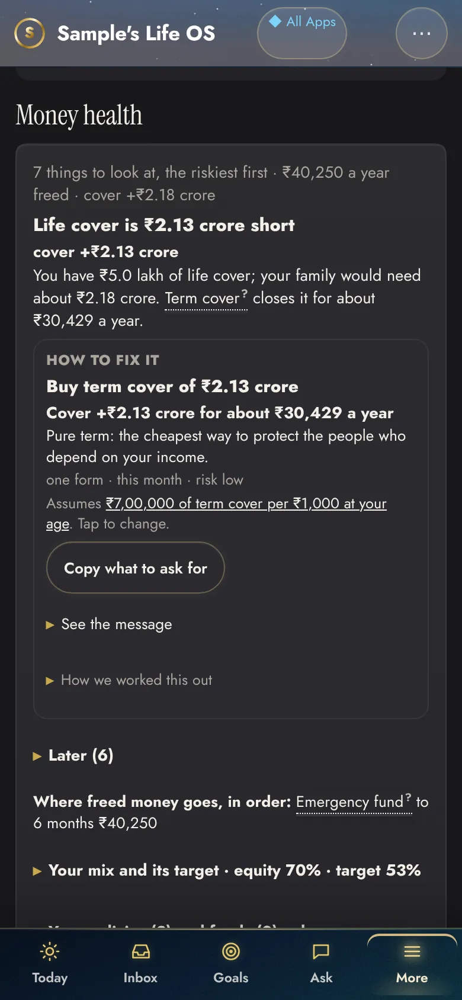
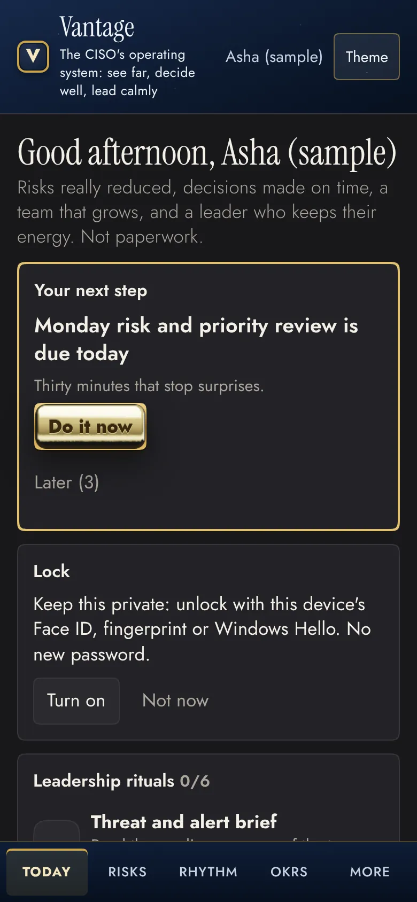

Your people use AI. Your data walks out with it.
And your own life is spread over ten apps and forty papers. There is a calmer way. Here it is, in six short scenes.
A guardian that sits on your side.
SecuRAX runs on devices you own. It reads what goes out, keeps what is private at home, and answers to one person: you.

- Laptop
- Phone
- Server
Let your people use AI. Keep your data out of it.
Shield stands between your people and every AI model.
A prompt goes in
Someone in a hurry pastes a customer's details.
› Reply to customer XXXX. PAN XXXXXXXXXX, card XXXX XXXX XXXX XXXX.Private data is stripped
The model sees only placeholders. An attack is refused before any model sees it.
✔ PAN [INCOME_TAX_PAN_REDACTED]✖ "Ignore your rules" refusedThe evidence is kept
Every block and every redaction goes into a tamper-evident log your auditor can read.
11 of 11 attacks in our red-team suite blocked, each refused in under 50 ms, 95 times in 100.
Your whole life, calm on one screen.
Money, health, family and goals, locked by your face. Every red number comes with the fixes that work best for you.



One next step, not a dashboard to decode.
Vantage runs a security leader's week on phone and laptop: the review that is due, the risks, the rituals and the board report.

Code decides. AI only proposes.
- It runs on your own machines, and works offline.
- It keeps working if our servers vanish.
- No AI says yes or no to your data; plain code does.
- Every line is readable: FSL-1.1-MIT, MIT after two years.
- 1650+automated tests on every change
- 50journeys run the real product in CI
- 11 of 11red-team attacks blocked
- 9frameworks mapped to evidence
Counted from the code on every release. Mappings with evidence, not certifications: what we do not claim.
See where your AI risk sits.
Two minutes, a few taps, no sign-up. For yourself, the Life OS is free and works as a guest.